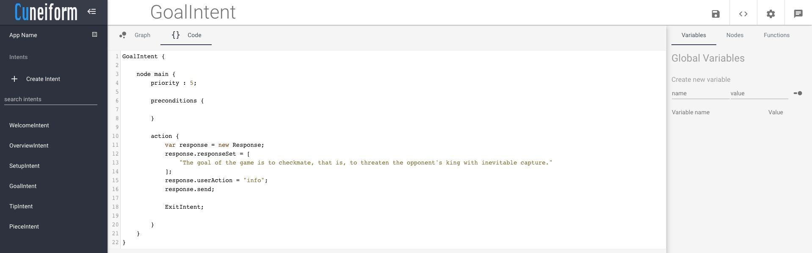
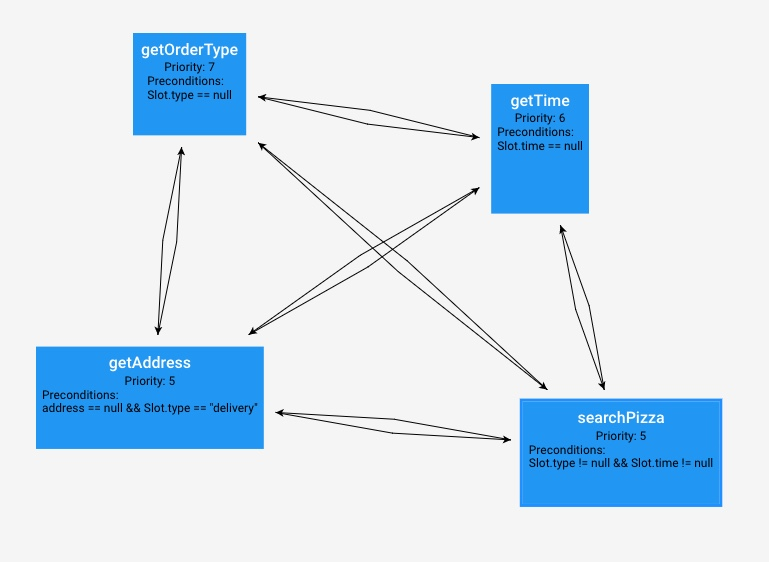
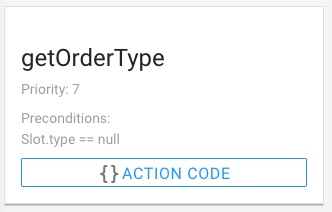
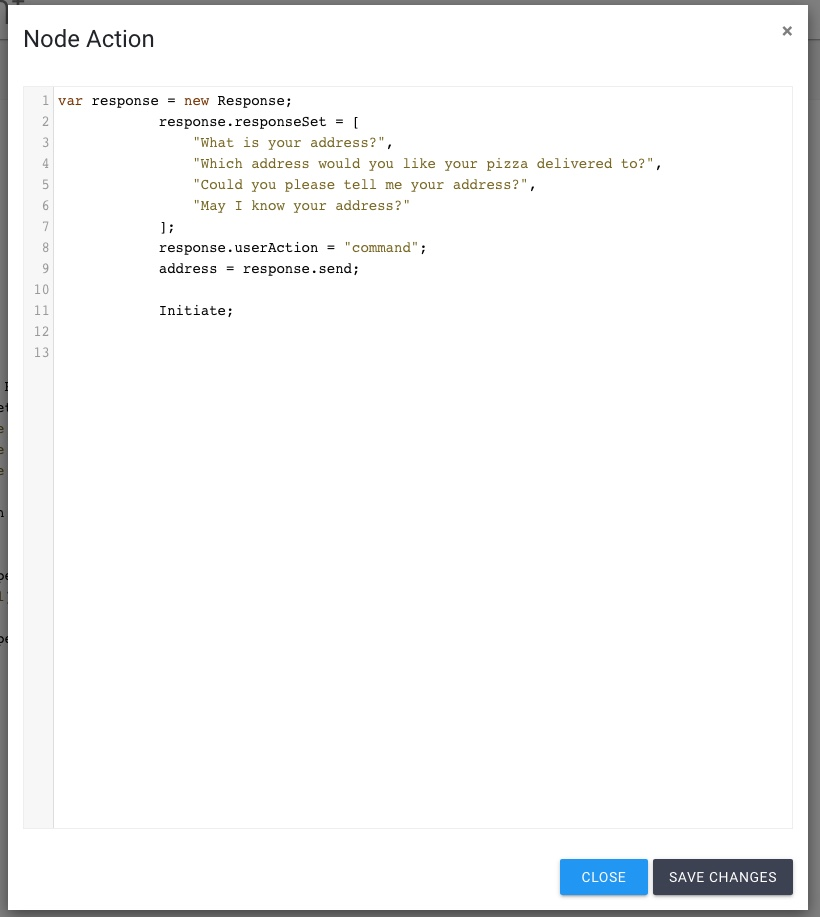
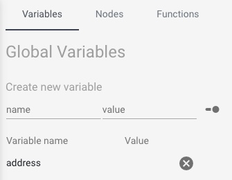
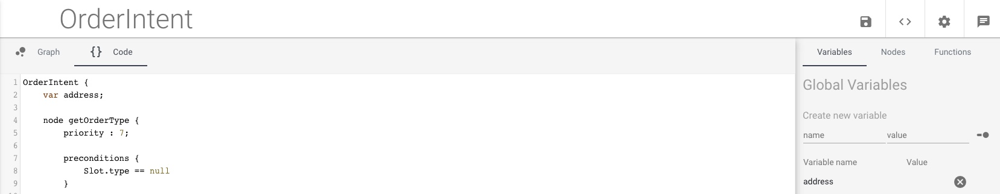

In Cuneiform, each intent consists of its own conversation graph. The conversation graph is a Graph data structure which consists of a set of nodes interconnected by edges. Each edge connecting into a single node may consist with a set of preconditions.
Each node in the conversation graph consists of the following attributes.
The conversation graph for each intent is textually represented in a cuneiform file, consisting of a .cu extension. If any projects have been created, cuneiform files could be found in the "<CUNEIFORM_HOME>/resources/deployment/applications/appX/intents" directory, where <CUNEIFORM_HOME> represents the location in which Cuneiform was downloaded.
In this directory, we will be able to see a set of .cu files, one for each intent. The code for the conversation graph (contents of a .cu file) can also be viewed from the Cuneiform Development Environment by selecting the intent name on the left side navigation bar, and then clicking on the " Code" tab on the top left side of the console.
As mentioned earlier, the conversation graph is a graph data structure consisting of nodes, which are interconnected with each other with edges. Each of these edges contain a set of preconditions.
Consider the graph from the PizzaShop sample above. This graph consists of the following four nodes:
The arrows indicate that once a node has finished executing, the next node to be executed can be any of the other nodes pointing from the current node to another node, as long as the preconditions are satisfied. In the above graph, each node can execute every other node upon completion. However, this may not always be the case.
In this sample above, there are two slots called "type", and "time", as well as a global variable called "address".
The code for a node follows the structure shown below:
node <NODE_NAME> {
priority: <PRIORITY_VALUE>;
preconditions {
<CONDITION_SET>
}
action {
<ACTION_SET>
}
}
The sole purpose of assigning a priority to a node is accounting for cases where preconditions get satisfied for multiple nodes. In this case, the node with the highest priority gets executed. This is done such that the developer get more control over the behaviour of the system. The priority is set to 5 by default.
In our sample application, the user could initiate the intent without specifying values for the type, or time slots. In this case, the preconditions hold true for both getOrderType, and getTime nodes. However, since the getOrderType node has the higher priority, it gets executed.
In the case where multiple nodes of equal priority have valid preconditions (eg: getAddress and searchPizza), one node is selected by the system at random.
In the conversation graph, the preconditions represent the edges. Each edge pointing into a node represents the preconditions of that node. The condition set within the preconditions are written as a condition in conditionals for Cuneiform.
If there are no preconditions for the node, the condition set can be left empty. If there are more than one conditions, they can be separated by && or || operators, as well as parenthesis. To learn more about conditional statements, read about it in the conditionals section of the Cuneiform documentation.
The action indicates what is executed by the application when the node is visited. Node actions are written in the Cuneiform programming language. The actions for a node can be viewed by visiting the Nodes tab on the right navigation menu, and clicking the Action Code button on any of the nodes.
When this button is clicked, a view pops up with the action code inside. The code can be changed in this view. Once changes are complete, click on the Save Changes button, and the changes will be applied to the conversation graph.
Global variables are variables which are shared by all nodes in the graph. For example, in the PizzaShop sample, there is a single global variable called "address". They can be viewed by clicking on the variables tab on the right navigation menu.
In this section, existing global variables and their initial values can be viewed.
Variables can be created by providing a name on the name text field, and optionally providing a value in the value text field. Once completed, hit the enter/ return key to create the variable.
We also have the option to toggle the value of the global variable between the typed values, and system operations by clicking on the toggle switch ().
In the intent/ conversation graph code, global variables should be declared immediately after the declaration of the intent name, before any nodes, or functions are declared.
In the next section, we will get to learn more about the Cuneiform programming language.